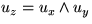

El sistema de coordenades de l'observador és un sistema que té el seu origen a la posició O de l'observador, l'eix z dirigit en la direcció contrària al vector OC - de manera que el punt C es troba sempre sobre la part negativa de l'eix z -, l'eix y en el pla definit per l'eix z i el vector cap amunt - perpendicular a z i en el semiplà respecte z que conté el vector cap amunt -, i l'eix x perpendicular a y, z. El triedre és directe, i per tant  on ux, uy i uz són els vectors unitaris en la direcció dels tres eixos. El podem veure a la imatge, centrat a la posició de l'observador, amb els eixos x (vermell), y (verd) i z (blau). Com que el cub talla el pla de retallat anterior, a la vista només es veuen els trossos d'aresta que cauen dins de la piràmide de visió.